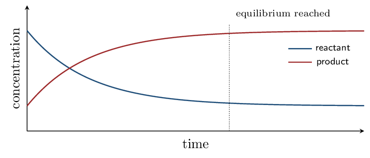

One question answers almost everything in this unit: how does \(Q\) compare with \(K\)?
| \(Q < K\) | too few products | shifts right |
|---|---|---|
| \(Q = K\) | at equilibrium | no net change |
| \(Q > K\) | too many products | shifts left |
That single comparison tells you which way a fresh mixture will move, whether a system has arrived, what a disturbance will do, and — in the last block — whether a precipitate forms. Le Ch\^atelier's principle is a shortcut for it, not a separate idea.
Dynamic Equilibrium CED 7.1–7.2 • Zumdahl §13.1
- Describe equilibrium as equal forward and reverse rates.
- Interpret concentration-time graphs approaching equilibrium.
Read: Zumdahl §13.1 • PDF pp. 651–654
- A reversible reaction is written with what symbol? \(\rightleftharpoons\)
- Rate depends on: concentration
- As reactant is consumed, the forward rate: decreases
- As product builds up, the reverse rate: increases
INSTRUCTION A • What “equilibrium” actually means 25 min
Equal rates, not equal amounts CED 7.1
SP 6Start with pure reactants. The forward rate is at its maximum and the reverse rate is zero. As the reaction proceeds:
- Reactant concentration falls, so the forward rate falls.
- Product concentration rises, so the reverse rate rises.
- When the two rates become equal, concentrations stop changing. That is dynamic equilibrium.
It also does not mean the reaction has stopped. Both directions continue at the same rate, which is why the word is dynamic. A question asking “what is happening at equilibrium?” wants that sentence.

Both curves level off — and they level off at different heights, which is the graphical version of the trap above.
APPLICATION • Reading the graph 20 min
- At the moment equilibrium is reached, compare the forward and reverse rates, and compare the concentrations.
- A student says “the reaction stopped.” Correct them.
- How would the graph differ for a reaction with a very large \(K\)?
\(Q\), \(K\), and Calculating Them CED 7.3–7.4 • Zumdahl §13.2–13.4
- Write \(K\) and \(Q\) expressions correctly.
- Calculate \(K\) from equilibrium data.
Read: Zumdahl §13.2–13.4 • PDF pp. 654–662
- Equilibrium means equal: rates
- Coefficients become what in a \(K\) expression? exponents
- Which species are omitted from \(K\)? pure solids and liquids
INSTRUCTION A • Writing the expression 25 min
\(K\) and \(Q\) have the same form CED 7.3
SP 5For \(\ce{aA + bB <=> cC + dD}\): \[ K = \frac{[\ce{C}]^c[\ce{D}]^d}{[\ce{A}]^a[\ce{B}]^b} \]
\(Q\) has the identical form but uses concentrations at any moment, not necessarily equilibrium ones.Watch for water: \(\ce{H2O(l)}\) as a solvent is omitted, but \(\ce{H2O(g)}\) in a gas-phase reaction is included. The state symbol is doing real work and is not decoration.
INSTRUCTION B • Calculating \(K\) 20 min
From equilibrium concentrations CED 7.4
SP 5At equilibrium a vessel contains \([\ce{N2}] = 0.50\), \([\ce{H2}] = 0.30\), \([\ce{NH3}] = 0.20\) M for \(\ce{N2 + 3H2 <=> 2NH3}\).
\[ K = \frac{(0.20)^2}{(0.50)(0.30)^3} = \frac{0.040}{(0.50)(0.027)} = \frac{0.040}{0.0135} = \mathbf{3.0} \]The cube on hydrogen is where marks are lost — \((0.30)^3 = 0.027\), not \(0.90\).
\(K_p\) and \(K_c\) CED 7.4
For gases, \(K\) may be written with partial pressures: \[ K_p = K_c(RT)^{\Delta n} \qquad \Delta n = \text{mol gas products} - \text{mol gas reactants} \]
When \(\Delta n = 0\), \(K_p\) and \(K_c\) are equal.
For \(\ce{N2 + 3H2 <=> 2NH3}\) at 500 K with \(K_c = 0.50\): \(\Delta n = 2 - 4 = -2\). \[ K_p = (0.50)[(0.08206)(500)]^{-2} = \frac{0.50}{(41.03)^2} = \mathbf{3.0\times10^{-4}} \]
APPLICATION • Expressions and values 20 min
- Write \(K\) for \(\ce{2SO2(g) + O2(g) <=> 2SO3(g)}\). \([\ce{SO3}]^2/([\ce{SO2}]^2[\ce{O2}])\)
- Write \(K\) for \(\ce{Fe3O4(s) + 4H2(g) <=> 3Fe(s) + 4H2O(g)}\). \([\ce{H2O}]^4/[\ce{H2}]^4\)
- At equilibrium \([\ce{H2}] = 0.20\), \([\ce{I2}] = 0.40\),
\([\ce{HI}] = 0.60\) M. Find \(K\) for
\(\ce{H2 + I2 <=> 2HI}\).
\(K = (0.60)^2/[(0.20)(0.40)] = 0.36/0.080 = \mathbf{4.5}\)
Magnitude and Properties of \(K\) CED 7.5–7.6 • Zumdahl §13.3–13.5
- Interpret the size of \(K\).
- Adjust \(K\) when a reaction is manipulated.
Read: Zumdahl §13.3–13.5 • PDF pp. 658–671
- \(K\) for \(\ce{CaCO3(s) <=> CaO(s) + CO2(g)}\): \([\ce{CO2}]\)
- \(K_p = K_c(RT)^{?}\): \(\Delta n\)
- Only what change alters the value of \(K\)? temperature
INSTRUCTION A • What the number tells you 25 min
Reading the magnitude CED 7.5
SP 5| \(K \gg 1\) (say \(> 10^2\)) | products strongly favored |
|---|---|
| \(K \approx 1\) | appreciable amounts of both |
| \(K \ll 1\) (say \(< 10^{-2}\)) | reactants strongly favored |
INSTRUCTION B • Manipulating \(K\) 20 min
Four rules CED 7.6
SP 5| Change to the equation | New \(K\) |
|---|---|
| reverse it | \(1/K\) |
| multiply the coefficients by \(n\) | \(K^n\) |
| divide the coefficients by \(n\) | \(K^{1/n}\) |
| add two reactions | \(K_1 \times K_2\) |
If \(K = 4.0\) for \(\ce{A + B <=> C}\), then:
- \(\ce{C <=> A + B}\) has \(K = 1/4.0 = \mathbf{0.25}\).
- \(\ce{2A + 2B <=> 2C}\) has \(K = (4.0)^2 = \mathbf{16}\).
- \(\ce{\tfrac{1}{2}A + \tfrac{1}{2}B <=> \tfrac{1}{2}C}\) has \(K = \sqrt{4.0} = \mathbf{2.0}\).
- Added to a second reaction with \(K = 3.0\), the overall \(K\) is \((4.0)(3.0) = \mathbf{12}\).
Notice these are multiplicative operations, unlike \(\Delta H\) in Unit 6, which was additive. Equilibrium constants multiply where enthalpies add.
APPLICATION • Using the rules 20 min
- \(K = 2.5\times10^{-3}\) for a reaction. Give \(K\) for the reverse. \(4.0\times10^{2}\)
- Classify each as products-favored, reactants-favored, or mixed: \(K = 1\times10^{-10}\), \(K = 1.5\), \(K = 3\times10^{6}\).
- A reaction has \(K = 10^{35}\) but no observable change occurs when the reactants are mixed. Is the value wrong? Explain.
ICE Tables CED 7.7 • Zumdahl §13.6
- Set up and solve an ICE table.
- Apply and test the small-\(x\) approximation.
Read: Zumdahl §13.6 • PDF pp. 671–676
- Reversing a reaction gives \(K =\) \(1/K\)
- \(K \ll 1\) favors: reactants
- BCA tables from Unit 4 tracked what? moles, to completion
INSTRUCTION A • The table you already know 25 min
ICE is BCA with an unknown CED 7.7
SP 5 ICE stands for Initial, Change, Equilibrium. It is the Before/Change/After table from stoichiometry, with one difference: the reaction stops partway, so the change is an unknown \(x\).The change row is still driven by the coefficients — if A has coefficient 1 and C has coefficient 2, then A changes by \(-x\) and C by \(+2x\).
| \(\ce{A}\) | \(\ce{B}\) | \(\ce{C}\) | |
|---|---|---|---|
| Initial | 0.100 | 0 | 0 |
| Change | \(-x\) | \(+x\) | \(+x\) |
| Equilibrium | \(0.100 - x\) | \(x\) | \(x\) |
Because \(K\) is very small, very little A reacts, so \(0.100 - x \approx 0.100\): \[ x^2 \approx (1.0\times10^{-5})(0.100) = 1.0\times10^{-6} \qquad x = \mathbf{1.0\times10^{-3}} \]
Test it: \(x/[\ce{A}]_0 = 1.0\%\), comfortably under 5%, so the approximation is justified. ✓Rule of thumb: the approximation is safe when \(K\) is small relative to the initial concentration — roughly \([\ce{A}]_0/K > 400\).
APPLICATION • Running the table 20 min
- \(\ce{A <=> 2B}\), \(K = 4.0\times10^{-6}\),
\([\ce{A}]_0 = 0.50\,\mathrm{M}\). Find \([\ce{B}]\) at equilibrium.
\(K = (2x)^2/(0.50-x) \approx 4x^2/0.50\); \(4x^2 = 2.0\times10^{-6}\); \(x = 7.1\times10^{-4}\); \([\ce{B}] = 2x = \mathbf{1.4\times10^{-3}}\) M. Check: \(x/0.50 = 0.14\%\) ✓
- Why does a small \(K\) make the approximation safe, in one sentence?
When the Approximation Fails CED 7.7 • Zumdahl §13.6
- Recognize when the small-\(x\) approximation is invalid.
- Solve the resulting quadratic or perfect square.
Read: Zumdahl §13.6 • PDF pp. 671–676
- The approximation threshold: 5%
- ICE stands for: Initial, Change, Equilibrium
- Large \(K\) means the approximation is likely to be: invalid
INSTRUCTION A • The check that saves you 25 min
A failed approximation, quantified CED 7.7
SP 5The approximation was wrong by about 93%. This is why the check is not optional.
INSTRUCTION B • Perfect squares 20 min
When both sides are squares, take the root CED 7.7
SP 5Some ICE expressions avoid the quadratic formula entirely.
| \(\ce{H2}\) | \(\ce{I2}\) | \(\ce{HI}\) | |
|---|---|---|---|
| Initial | 1.00 | 1.00 | 0 |
| Change | \(-x\) | \(-x\) | \(+2x\) |
| Equilibrium | \(1.00-x\) | \(1.00-x\) | \(2x\) |
Both sides are perfect squares, so take the square root: \[ \frac{2x}{1.00-x} = \sqrt{50.0} = 7.07 \] \[ 2x = 7.07 - 7.07x \quad\Longrightarrow\quad 9.07x = 7.07 \quad\Longrightarrow\quad x = \mathbf{0.780} \]
So \([\ce{H2}] = [\ce{I2}] = \mathbf{0.220}\) and \([\ce{HI}] = \mathbf{1.56}\) M.
Check: \((1.56)^2/(0.220)^2 = 50.0\) ✓ — always worth 30 seconds.APPLICATION • Choosing a method 20 min
- For each, say whether the small-\(x\) approximation is likely valid: (i) \(K = 10^{-8}\), \([\ce{A}]_0 = 1.0\); (ii) \(K = 2.0\), \([\ce{A}]_0 = 0.10\); (iii) \(K = 10^{-6}\), \([\ce{A}]_0 = 10^{-5}\).
- Solve \(\ce{A <=> 2B}\) with \(K = 0.50\) and
\([\ce{A}]_0 = 1.00\) M, using the quadratic.
\(K = 4x^2/(1.00-x) = 0.50\), so \(4x^2 + 0.50x - 0.50 = 0\). \(x = [-0.50 + \sqrt{0.25 + 8.0}]/8 = (-0.50+2.872)/8 = \mathbf{0.297}\); \([\ce{B}] = 0.593\), \([\ce{A}] = 0.703\) M
Representations and Le Ch\^atelier CED 7.8–7.9 • Zumdahl §13.1, §13.7
- Interpret particulate and graphical representations of equilibrium.
- Predict the effect of a disturbance.
Read: Zumdahl §13.1, §13.7 • PDF pp. 651–654, 676–683
- Failed approximation \(\Rightarrow\) use the: quadratic
- At equilibrium, \(Q\) equals: \(K\)
- Only what changes \(K\)? temperature
INSTRUCTION A • Le Ch\^atelier's principle 25 min
A system opposes the change imposed on it CED 7.9
SP 6| Disturbance | Shift | Does \(K\) change? |
|---|---|---|
| add reactant | right | no |
| add product | left | no |
| remove product | right | no |
| compress (smaller \(V\)) | toward fewer moles of gas | no |
| expand (larger \(V\)) | toward more moles of gas | no |
| add inert gas at constant \(V\) | no shift | no |
| add a catalyst | no shift | no |
| raise \(T\), endothermic forward | right | yes, increases |
| raise \(T\), exothermic forward | left | yes, decreases |
Two more that recur: an inert gas added at constant volume changes the total pressure but not any partial pressure or concentration, so nothing shifts. And a catalyst speeds both directions equally — equilibrium arrives sooner, in the same place.
Temperature as a reactant or product CED 7.9
Treat energy as a term in the equation. For an exothermic reaction, write heat as a product; adding heat then pushes the equilibrium left, exactly as adding any other product would.
INSTRUCTION B • Particulate representations 20 min
Reading a picture of an equilibrium CED 7.8
SP 1When a question shows before-and-after particle diagrams:
- Count particles and check that atoms are conserved.
- Compare the ratio of products to reactants against \(K\).
- Two diagrams showing no change in counts between successive times indicate the system has reached equilibrium.
APPLICATION • Predicting shifts 20 min
For \(\ce{N2(g) + 3H2(g) <=> 2NH3(g)}\), \(\Delta H = -92\) kJ:
- Add \(\ce{N2}\): shifts right
- Remove \(\ce{NH3}\): shifts right
- Compress the vessel: right — 4 mol gas to 2
- Add argon at constant volume: no shift
- Raise the temperature:
- Add a catalyst: no shift; equilibrium sooner
\(Q\) versus \(K\) Quantitatively CED 7.10 • Zumdahl §13.7
- Calculate \(Q\) and compare it with \(K\) to predict direction.
- Justify a Le Ch\^atelier prediction quantitatively.
Read: Zumdahl §13.7 • PDF pp. 676–683
- Adding a product shifts the equilibrium: left
- An inert gas at constant volume causes: no shift
- Compressing shifts toward: fewer moles of gas
INSTRUCTION A • The calculation behind the principle 25 min
\(Q\) is the answer to “which way?” CED 7.10
SP 5Le Ch\^atelier tells you the direction; \(Q\) proves it. On an FRQ, the quantitative justification is usually worth the point that the qualitative one is not.
For \(\ce{H2 + I2 <=> 2HI}\), \(K = 4.5\). A vessel is charged with \([\ce{H2}] = 0.40\), \([\ce{I2}] = 0.30\), \([\ce{HI}] = 0.40\) M.
\[ Q = \frac{(0.40)^2}{(0.40)(0.30)} = \frac{0.16}{0.12} = 1.3 \] \(Q = 1.3 < K = 4.5\), so there are too few products: the reaction proceeds to the right until \(Q\) rises to 4.5.Note that this required no Le Ch\^atelier reasoning at all — the comparison settles it directly, and it works even for a fresh mixture that was never at equilibrium.
Le Ch\^atelier applies to disturbing a system already at equilibrium. \(Q\) versus \(K\) works for any mixture, equilibrium or not. When a question gives you arbitrary starting concentrations, \(Q\) is the tool — Le Ch\^atelier has nothing to say about a mixture that was never at equilibrium in the first place.
APPLICATION • Direction from data 20 min
- \(K = 4.5\) for \(\ce{H2 + I2 <=> 2HI}\). For each mixture, calculate
\(Q\) and state the direction:
- \([\ce{H2}]=[\ce{I2}]=[\ce{HI}]=0.50\) \(Q = 1.0\); shifts right
- \([\ce{H2}]=0.10\), \([\ce{I2}]=0.10\), \([\ce{HI}]=0.30\) \(Q = 9.0\); shifts left
- A system at equilibrium has extra product added. Explain, using \(Q\), why it shifts left.
Solubility Equilibria CED 7.11–7.12 • Zumdahl §16.1
- Relate \(K_{sp}\) to molar solubility.
- Explain and calculate the common-ion effect.
Read: Zumdahl §16.1 • PDF pp. 805–812
- \(Q < K\) means the reaction shifts: right
- Pure solids appear in \(K\)? no
- Adding a product shifts equilibrium: left
INSTRUCTION A • The same machinery, applied to a solid 25 min
\(K_{sp}\) is just \(K\) CED 7.11
SP 5A saturated solution is a system at equilibrium with undissolved solid: \[ \ce{CaF2(s) <=> Ca^2+(aq) + 2F^-(aq)} \qquad K_{sp} = [\ce{Ca^2+}][\ce{F^-}]^2 \]
The solid is omitted for the reason you already know — it is a pure solid.
| Type | \(K_{sp}\) in terms of \(s\) | Solubility |
|---|---|---|
| \(\ce{MX}\) | \(s^2\) | \(s = \sqrt{K_{sp}}\) |
| \(\ce{MX2}\) or \(\ce{M2X}\) | \(4s^3\) | \(s = \sqrt[3]{K_{sp}/4}\) |
And \(K_{sp}\) values may be compared directly only for salts producing the same number of ions. \(\ce{CaF2}\) (\(K_{sp} = 4.0\times10^{-11}\)) is far more soluble than \(\ce{BaCrO4}\) (\(8.5\times10^{-11}\)) despite the smaller constant, because \(s\) enters to different powers.
INSTRUCTION B • The common-ion effect 20 min
Le Ch\^atelier, one last time CED 7.12
SP 6Dissolve a salt in a solution already containing one of its ions and you have added a product. The equilibrium shifts left, so less dissolves — while \(K_{sp}\) stays exactly the same.
Suppressed by a factor of about 7900 — and \(K_{sp}\) never moved.
APPLICATION • Solubility calculations 20 min
- Calculate the molar solubility of \(\ce{CaF2}\)
(\(K_{sp} = 4.0\times10^{-11}\)) in pure water.
\(4s^3 = 4.0\times10^{-11}\); \(s^3 = 1.0\times10^{-11}\); \(s = \mathbf{2.2\times10^{-4}}\) M
- Calculate it in 0.025 M \(\ce{NaF}\).
\([\ce{F-}] \approx 0.025\); \(4.0\times10^{-11} = s(0.025)^2\); \(s = \mathbf{6.4\times10^{-8}}\) M
- State what happened to \(K_{sp}\) between (a) and (b), and why.